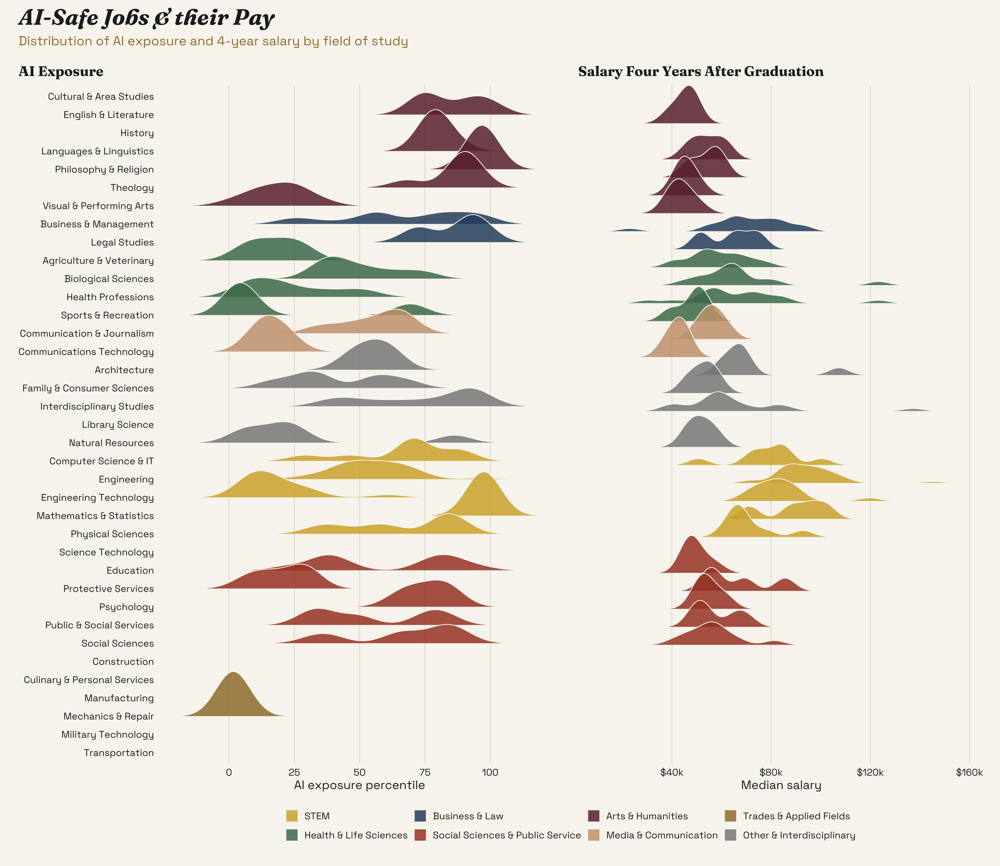

In order to group ridgeline plots by even broader categories than broad_field, and for the sake of legibility, we create field_short a shorter descriptor of each of the broad_fields. Since there are \(37\) unique broad_field entries, and time is money, I provided the output of unique(ai_salary_majors$broad_field) to ChatGPT, which provided me the re-naming labels, and also grouped each out these broad_fields into the broader categories, field_group.
Code
ai_salary_majors <- ai_salary_majors |>mutate(field_short =case_when( broad_field =="Construction Trades"~"Construction", broad_field =="Visual and Performing Arts"~"Visual & Performing Arts", broad_field =="Precision Production"~"Manufacturing", broad_field =="Mechanic and Repair Technologies/Technicians"~"Mechanics & Repair", broad_field =="Transportation and Materials Moving"~"Transportation", broad_field =="Parks, Recreation, Leisure, Fitness, and Kinesiology"~"Sports & Recreation", broad_field =="Health Professions and Related Programs"~"Health Professions", broad_field =="Agricultural/Animal/Plant/Veterinary Science and Related Fields"~"Agriculture & Veterinary", broad_field =="Natural Resources and Conservation"~"Natural Resources", broad_field =="Culinary, Entertainment, and Personal Services"~"Culinary & Personal Services", broad_field =="Engineering/Engineering-Related Technologies/Technicians"~"Engineering Technology", broad_field =="Homeland Security, Law Enforcement, Firefighting and Related Protective Services"~"Protective Services", broad_field =="Communications Technologies/Technicians and Support Services"~"Communications Technology", broad_field =="Family and Consumer Sciences/Human Sciences"~"Family & Consumer Sciences", broad_field =="Military Technologies and Applied Sciences"~"Military Technology", broad_field =="Science Technologies/Technicians"~"Science Technology", broad_field =="Education"~"Education", broad_field =="Business, Management, Marketing, and Related Support Services"~"Business & Management", broad_field =="Engineering"~"Engineering", broad_field =="Computer and Information Sciences and Support Services"~"Computer Science & IT", broad_field =="Public Administration and Social Service Professions"~"Public & Social Services", broad_field =="Social Sciences"~"Social Sciences", broad_field =="Biological and Biomedical Sciences"~"Biological Sciences", broad_field =="History"~"History", broad_field =="Physical Sciences"~"Physical Sciences", broad_field =="Communication, Journalism, and Related Programs"~"Communication & Journalism", broad_field =="Multi/Interdisciplinary Studies"~"Interdisciplinary Studies", broad_field =="Architecture and Related Services"~"Architecture", broad_field =="Library Science"~"Library Science", broad_field =="Psychology"~"Psychology", broad_field =="Theology and Religious Vocations"~"Theology", broad_field =="Legal Professions and Studies"~"Legal Studies", broad_field =="English Language and Literature/Letters"~"English & Literature", broad_field =="Area, Ethnic, Cultural, Gender, and Group Studies"~"Cultural & Area Studies", broad_field =="Foreign Languages, Literatures, and Linguistics"~"Languages & Linguistics", broad_field =="Philosophy and Religious Studies"~"Philosophy & Religion", broad_field =="Mathematics and Statistics"~"Mathematics & Statistics",TRUE~NA_character_ ) )ai_salary_majors <- ai_salary_majors |>mutate(field_group =case_when( field_short %in%c("Mathematics & Statistics","Computer Science & IT","Engineering","Engineering Technology","Physical Sciences","Science Technology" ) ~"STEM", field_short %in%c("Health Professions","Biological Sciences","Agriculture & Veterinary","Sports & Recreation" ) ~"Health & Life Sciences", field_short %in%c("Business & Management","Legal Studies" ) ~"Business & Law", field_short %in%c("Social Sciences","Psychology","Education","Public & Social Services","Protective Services" ) ~"Social Sciences & Public Service", field_short %in%c("Visual & Performing Arts","History","English & Literature","Philosophy & Religion","Languages & Linguistics","Cultural & Area Studies","Theology" ) ~"Arts & Humanities", field_short %in%c("Communication & Journalism","Communications Technology" ) ~"Media & Communication", field_short %in%c("Construction","Manufacturing","Mechanics & Repair","Transportation","Culinary & Personal Services","Military Technology" ) ~"Trades & Applied Fields", field_short %in%c("Architecture","Natural Resources","Library Science","Family & Consumer Sciences","Interdisciplinary Studies" ) ~"Other & Interdisciplinary",TRUE~NA_character_ ) )|>arrange(field_group, field_short) |>mutate(field_short =factor( field_short,levels =unique(field_short) ) )
Now we plot the ridgeline plots! I’d like to disclose that I used Claude Code for colour theme here, I like to keep things consistent and pretty! The fonts chosen, are also chosen with this website in mind :)
Code
font_add_google("Space Grotesk", "space_grotesk")font_add_google("Fraunces", "fraunces")showtext_auto()showtext_opts(dpi =300)cream <-"#F8F5F0"ink <-"#222222"gold <-"#D4AF37"group_cols <-c("STEM"="#D4AF37","Health & Life Sciences"="#4C7A5A","Business & Law"="#2F4F6F","Social Sciences & Public Service"="#A8452F","Arts & Humanities"="#6B2D3C","Media & Communication"="#C9A27E","Trades & Applied Fields"="#9E7E38","Other & Interdisciplinary"="#8A8A8A")fill_scale <-scale_fill_manual(values = group_cols, limits =names(group_cols), name =NULL,guide =guide_legend(nrow =2))ridge_layer <-geom_density_ridges(scale =2, alpha =0.85, rel_min_height =0.01,colour = cream, linewidth =0.4)p1 <- ai_salary_majors |>ggplot(aes(x = ai_exposure_percentile, y = field_short, fill = field_group)) + ridge_layer + fill_scale +scale_y_discrete(limits = rev) +scale_x_continuous(breaks =seq(0, 100, 25)) +labs(title ="AI Exposure", x ="AI exposure percentile", y =NULL)p2 <- ai_salary_majors |>ggplot(aes(x = median_salary_4yr, y = field_short, fill = field_group)) + ridge_layer + fill_scale +guides(fill ="none") +# p1's legend covers bothscale_y_discrete(limits = rev, labels =NULL) +scale_x_continuous(labels =label_dollar(scale =1e-3, suffix ="k")) +labs(title ="Salary Four Years After Graduation", x ="Median salary", y =NULL)((p1 | p2) +plot_layout(guides ="collect") &theme_minimal(base_family ="space_grotesk", base_size =13) &theme(plot.background =element_rect(fill = cream, colour =NA),panel.background =element_rect(fill = cream, colour =NA),panel.grid.minor =element_blank(),panel.grid.major.y =element_blank(),panel.grid.major.x =element_line(colour ="#E4DED3", linewidth =0.4),text =element_text(colour = ink),axis.text =element_text(colour = ink),plot.title =element_text(family ="fraunces", face ="bold", size =15),plot.title.position ="plot",legend.position ="bottom",legend.key.size =unit(0.5, "cm"),plot.margin =margin(10, 10, 10, 10) )) +plot_annotation(title ="AI-Safe Jobs & their Pay",subtitle ="Distribution of AI exposure and 4-year salary by field of study",theme =theme(plot.background =element_rect(fill = cream, colour =NA),plot.title =element_text(family ="fraunces", face ="bold.italic", size =24, colour = ink),plot.subtitle =element_text(family ="space_grotesk", colour ="#9E7E38", size =14, margin =margin(b =10)) ) )

Upon observation we notice that no one kind of industry is “safe” from AI exposure, and that similarly, no salary range is safe from them either. We can find industries on either end of the salary spectrum that are “safe” and “unsafe” when it comes to AI exposure. The fields with most exposure to AI, seem to be humanities, law and (unfortunately for me) maths and statistics.
Arts & Humanities is the worst of both worlds. Most of its fields cluster at the 70th–100th percentile of AI exposure and also have the lowest salaries, around $40–60k. The one exception is a single field (likely Visual & Performing Arts) that sits low on exposure, I’m guessing due to the fact that people in these industries tend to work with physical mediums or perform acts (such as dancing and singing) that cannot be replaced with text-based AI. STEM pays best, but its exposure varies widely: exposure ranges from very high (again, maths & stats :(), to quite low (engineering technology. Surprisingly, CS & IT sits in the middle-high range, around the 70th. Health & Life Sciences is the closest thing to a “sweet spot.” Health Professions and Sports & Recreation are among the lowest-exposure fields outside the trades.
It is worth noting that the word here is “exposure”, not necessarilt “replacement” – AI may augment individuals’ work instead of eliminating it, hence how to interpret these plots is not exactly straightforward. Also, note that the smoothing of these plots creates several impossible values with percentiles extending below 0 and above 100. On top of this, the metric, median salary four years out, says nothing about long-term earnings, which may matter more for some fields than others!
What are we doing this week?
This week we’re looking at which college majors are safest from AI, and whether the safe ones actually pay well.
Our dataset joins three public sources at the level of the college major. Starting salaries come from the U.S. Department of Education’s College Scorecard field-of-study files, using median earnings one year after graduation for bachelor’s degrees. AI disruption risk comes from the AI Occupational Exposure (AIOE) index of Felten, Raj and Seamans (2021), which scores how much each occupation’s required abilities overlap with what AI can do. It also includes separate scores for language tasks and image tasks.
One thing to know about the exposure score: the AIOE is standardized to a mean of 0 and a standard deviation of 1. A value of 0 is an average occupation, and negative values fall below average. High exposure does not necessarily mean a job will be automated away, since AI can also assist the work rather than replace it. So that you don’t need a stats background to read it, the main table also includes ai_exposure_percentile, a plain 0 to 100 rank across all majors.
The AIOE links ten common AI applications with fifty-two distinct occupational abilities used by O*NET and uses the relative prevalence of these abilities within an occupation to generate an occupational measure of AI exposure. (Felten, Raj and Seamans 2021; description rephrased for compliance with licensing restrictions.)
Some questions to explore:
Which majors are both safe from AI and well paid, and which are both exposed and low paid?
Does the picture change when you look at language-task exposure versus image-task exposure?
Do broad fields like Engineering, Health Professions, Business, and Humanities cluster together?
The AIOE measures exposure, not automation. How would the story change if high exposure mostly meant AI assisting the work rather than replacing it?
Four-digit Classification of Instructional Programs (CIP) 2020 code identifying the field of study.
field_of_study
character
Human-readable name of the college major (from the College Scorecard CIP description).
broad_field
character
Official NCES title of the two-digit CIP family the major belongs to (from the CIP 2020 code file), title-cased with the trailing period removed. For example, CIP family 52 is “Business, Management, Marketing, and Related Support Services”.
broad_field_short
character
A short, chart-friendly label for the CIP family, keyed to the two-digit family code. This is a convenience label for plotting and grouping, not an official NCES title (e.g. the family above is shortened to “Business”).
median_starting_salary
double
Median earnings in US dollars one year after graduation, pooled across institutions offering the major (bachelor’s degree graduates). This is the starting-salary measure.
median_salary_4yr
double
Median earnings in US dollars four years after graduation, pooled across institutions. Missing for a few majors without four-year follow-up data.
ai_exposure
double
Average AI Occupational Exposure (AIOE) score across the occupations this major feeds into. The AIOE is standardized (mean 0, standard deviation 1); higher values mean more of the occupation’s abilities overlap with what AI can do.
ai_exposure_percentile
double
Rank of this major’s AI exposure on a 0 to 100 scale relative to all 285 majors in the dataset. 0 is the least AI-exposed major, 100 the most.
ai_exposure_language
double
Average AIOE score for the language-modeling application of generative AI (text-based tasks) across the major’s occupations. Standardized like ai_exposure.
ai_exposure_image
double
Average AIOE score for the image-generation application of generative AI (visual tasks) across the major’s occupations. Standardized like ai_exposure.
n_occupations
integer
Number of distinct occupations (SOC codes) the major maps to in the CIP-SOC crosswalk; the exposure scores are averaged over these occupations.
n_institutions
integer
Number of institutions whose graduates contributed to the pooled starting-salary figure for this major.
n_graduates
double
Total count of graduates with measured earnings one year out, summed across institutions offering the major.
major_occupations.csv
variable
class
description
cip4
character
Four-digit CIP 2020 code for the field of study; joins to cip4 in the ai_salary_majors table.
field_of_study
character
Name of the college major from the CIP-SOC crosswalk.
soc
character
Six-digit Standard Occupational Classification (SOC) 2018 code for an occupation this major can lead to.
occupation
character
Human-readable occupation title for the SOC code.
ai_exposure
double
Overall AI Occupational Exposure (AIOE) score for this occupation. Standardized (mean 0, SD 1); higher means more exposed to AI.
ai_exposure_language
double
AIOE score for the language-modeling application of generative AI for this occupation.
ai_exposure_image
double
AIOE score for the image-generation application of generative AI for this occupation.